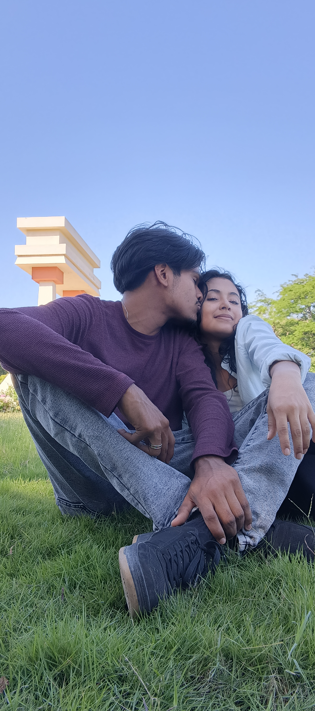

Hay historias que comienzan sin que uno se dé cuenta...
Y algunas personas llegan a nuestra vida...
Esta flor es para usted.
Y si todavía no lo había descubierto...
Porque usted se convirtió en esa persona que hace que los días normales tengan algo extraordinario.
Para la mujer que hizo florecer mi mundo.
Quizá esta no sea la forma más tradicional de regalarle flores.
No hay papel envolviendo un ramo, ni una cinta alrededor de él.
Hay algo diferente.
Estas flores están hechas de código, pero lo que representan es completamente real.
Desde que usted llegó a mi vida, hay cosas que cambiaron.
Algunas son pequeñas: una sonrisa, una conversación, un mensaje que llega en el momento indicado.
Y otras son mucho más grandes: esa sensación de saber que existe alguien especial al otro lado del día.
Usted ha conseguido que mi corazón encuentre belleza en lugares donde antes simplemente pasaba de largo.
Por eso elegí flores amarillas.
Porque representan alegría, cariño, luz y esperanza.
Pero si soy completamente sincero, para mí representan algo todavía más sencillo:
usted.
Y si algún día vuelve a preguntarme por qué hice todo esto...
porque quería que tuviera un lugar donde pudiera recordar lo mucho que significa para mí.
Porque una historia también está hecha de recuerdos...

Un recuerdo de nosotros ❤️
Y este es solamente uno de los muchos recuerdos que quiero seguir construyendo con usted.
Una flor comenzó todo...
Para usted
No sé cuántas flores harán falta para explicar todo lo que siento, pero mientras exista una razón para sonreír...
siempre habrá una flor amarilla esperando por usted.
Con amor,
Antonio